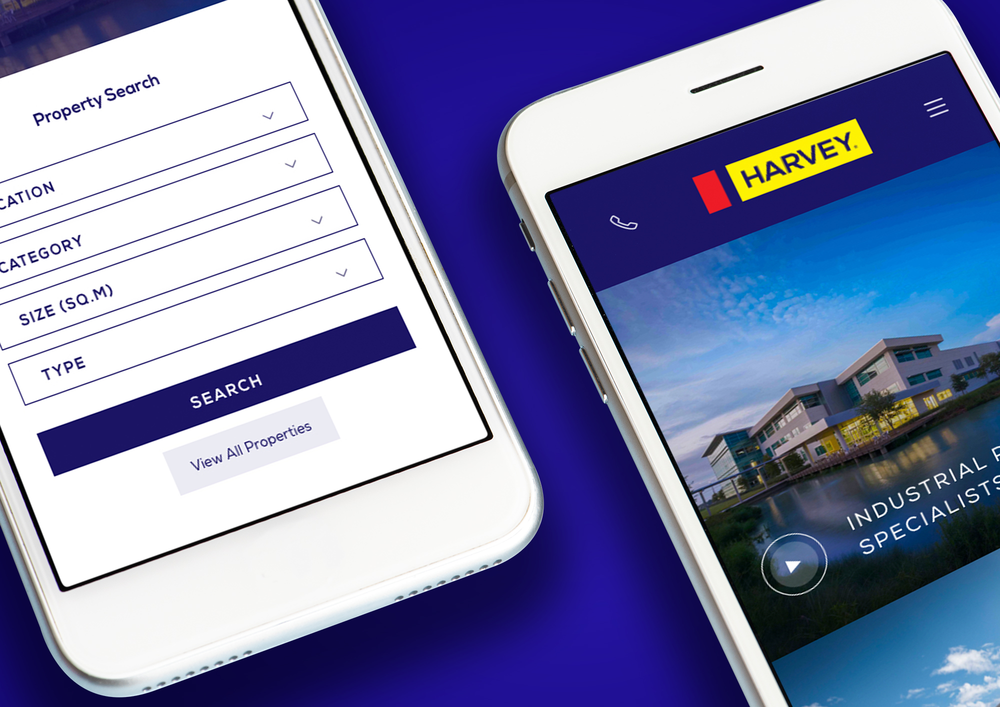
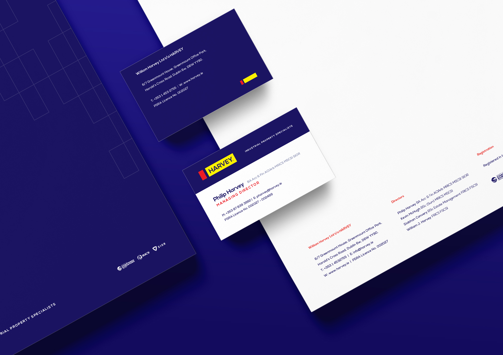
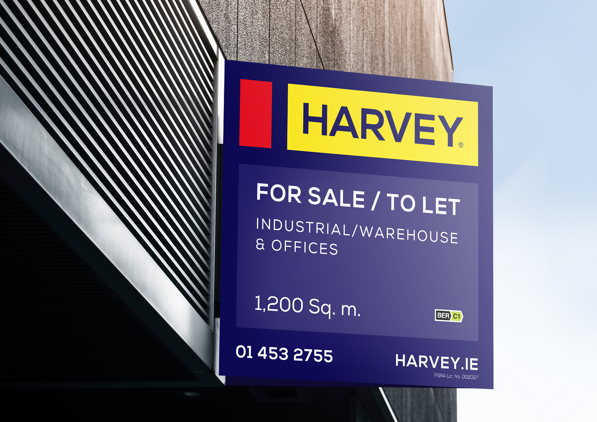
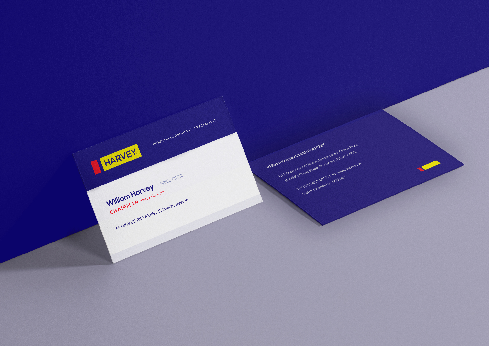

Harvey
Industrial Property Specialists
Harvey, established in 1979 as William Harvey, is the market leader in Irish industrial and logistics property, involved in many of the country's largest transactions. With a generational handover underway, the brand needed a bold, modern refresh that carried nearly half a century of pedigree to a new audience.

Shortening the name, sharpening the brand
As leadership passed from founder William to his son Philip, I recommended a critical simplification: William Harvey Auctioneers became simply Harvey. The new name is strong, bold and built for the next fifty years.

Modern identity, iconic colours
I studied the audience, brand values and mission, then rejuvenated the identity by distilling it to its essence. The logo keeps the iconic colours that have always represented Harvey, while the old factory icon was reduced to a minimalist solid form, modern and purposeful across all media. A bold, commanding typeface completes the streamlined aesthetic.

Every touchpoint
I worked across the brand's full experience: a modern, dashboard-style responsive website on the new harvey.ie domain, external signage, stationery and all offline marketing material, a well-known brand transformed into something more memorable through simplicity.

Twelve months on
A review after a year told the story: the firm grew from two directors to four, launched a new management-services division, and grew turnover by 30%. Time on site went from 30 seconds to over a minute, with bounce rate falling below 20%, strong returns on a brand investment.